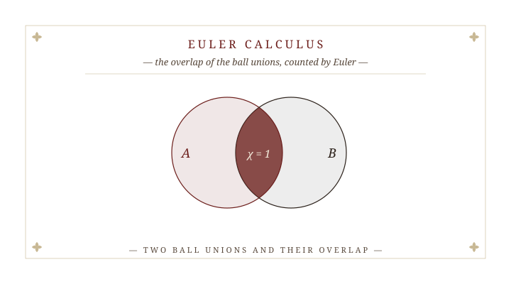
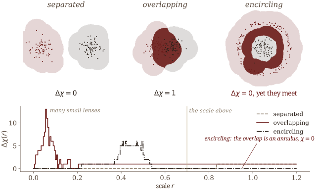
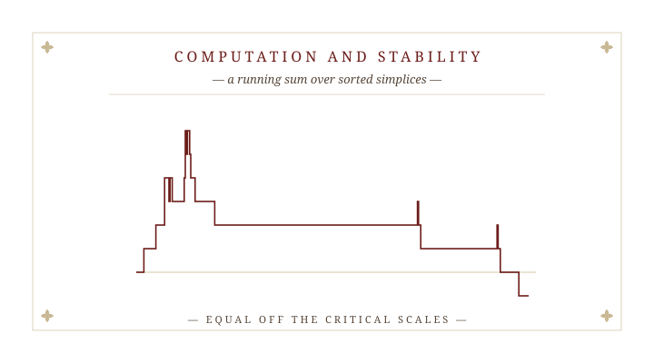
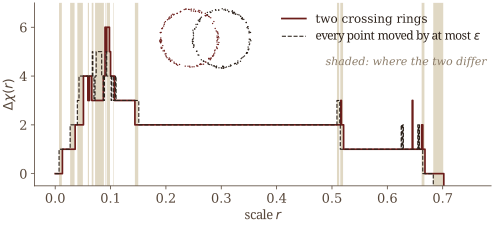
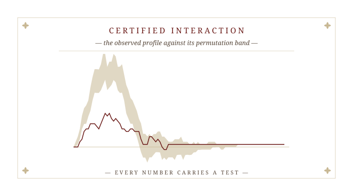
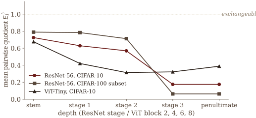
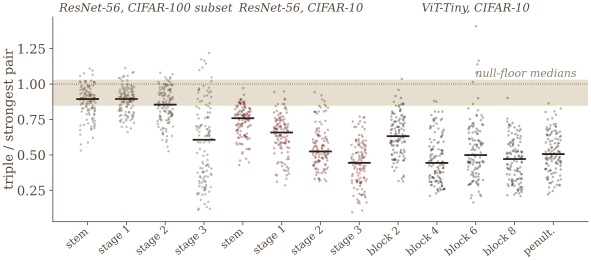

Euler Calculus, Stability, and Certified Topological Interaction of Point Clouds
16 November 2026
Several point clouds in \mathbb R^d: species occurrences, cell types, sensor tracks.
How much do they interact topologically, and at what scale?
The barcode of X is blind to Y: it is the same wherever Y sits.
The barcode of X\cup Y reacts to where they sit while they are still apart: a bar of H_0 dies at half their distance.
What we want is the topology of the overlap, scale by scale.

For pairwise disjoint finite clouds \mathcal X=(X_1,\dots,X_k) in \mathbb R^d, with \mathcal U(X;t)=\bigcup_{p\in X}B(p,t), and scales \mathbf t\in\mathbb R^k_{\ge0}, \Delta\chi(\mathbf t;\mathcal X)\;=\;\int_{\mathbb R^d}\prod_{i=1}^k \mathbf 1_{\mathcal U(X_i;t_i)}\,d\chi .
\Delta\chi(\mathbf t;\mathcal X)\;=\;\chi\Big(\bigcap_{i=1}^k\mathcal U(X_i;t_i)\Big). On the diagonal, for two clouds, \Delta\chi(r)=\chi_X(r)+\chi_Y(r)-\chi_{X\cup Y}(r).
An integer-valued curve, not a diagram: it enters a test or a learning pipeline as it is, with no vectorization.
At the marked scale the overlap is empty, one lens, and an annulus: \Delta\chi=0,\ 1,\ 0. The encircling clouds meet, yet \chi of an annulus is 0.

Let \Phi assign to each \mathcal X an integer profile, with
Then \Phi=\Delta\chi.
It decides which Euler-level summary of the overlap, not that its value measures strength: \chi is signed and not monotone. A stronger form asks only for a valuation, homotopy invariance, separation and normalization.

For |X|+|Y|=n in fixed dimension d, sweeping the Alpha complexes of X, Y and X\cup Y in birth order computes \Delta\chi in O\big(n^{\lceil d/2\rceil}\log n\big) time and O\big(n^{\lceil d/2\rceil}\big) space, forming no boundary matrix.
Each Euler characteristic curve is a running sum \sum_{a(\sigma)\le r}(-1)^{\dim\sigma} over simplices sorted by birth. No persistence reduction.
Worst-case optimal in even d among algorithms that build the filtration. k clouds by inclusion–exclusion, O\big(2^k n^{\lceil d/2\rceil}\log n\big); off the diagonal, a weighted Alpha complex.
Let \epsilon=\max_i d_H(X_i,X_i'). The overlap filtrations of \mathcal X and \mathcal X' are \epsilon-interleaved; \Delta\chi(r)=\Delta\chi'(r) whenever [r-\epsilon,r+\epsilon] holds no critical scale of either; and \|\Delta\chi-\Delta\chi'\|_{L^1}\le2\epsilon\,(N+N'), with N,N' the numbers of bars.

\Delta\chi itself admits no interleaving distance, and no L^1 bound free of the bar count can hold.
Let A_1,\dots,A_k\subset\mathbb R^d be compact with reach at least \tau>0, sampled i.i.d. from measures positive on balls, and let r\in(0,\tau) be a regular scale of \rho\mapsto T_\rho=\bigcap_i\mathcal U(A_i;\rho). Then almost surely, for all large samples, the \epsilon-persistent Euler characteristic of the sample overlap equals \chi(T_r); and if r is also regular for the sample, \Delta\chi(r;X_1,\dots,X_k)=\chi(T_r) exactly.
O\big(\epsilon^{-k_i}\log(1/\delta)\big) points from A_i, in its intrinsic dimension k_i, not the ambient d.

With \Phi(\Delta\chi)=\int|\Delta\chi(r)|\,dr, \widehat E=\frac{\Phi\big(\Delta\chi(\cdot;X_1,\dots,X_k)\big)}{\mathbb E_{H_0}\,\Phi}\,, about 1 when the labels are exchangeable, tending to 0 under separation.
If the labels of the pooled sample are exchangeable, the two one-sided permutation p-values satisfy \Pr[p\le\alpha]\le\alpha for every statistic, every \alpha, every sample size and every number B of permutations.
A separation certificate also checks that the unions provably meet, from the first interaction scale r^\ast; without it, an annular overlap is certified as separated.
A paired sign-flip test for claims such as layer \ell+1 is more disentangled than layer \ell. The statistic must be scale-free.
A four-signal onset detector: the profile between the delay-embedded windows before and after each day, with complexity variance, Higuchi fractal dimension and a rolling mean. Delete the profile and test the paired change in error.
| onset | system | years | with | without | \DeltaMAE, days (95% CI) | p |
|---|---|---|---|---|---|---|
| sharp | Nepal | 48 | 9.27 | 9.38 | -0.10 [-1.48,\,1.21] | 0.905 |
| sharp | Kerala | 45 | 6.18 | 7.02 | -0.84 [-2.07,\,0.38] | 0.200 |
| gradual | Western North Pacific | 66 | 17.36 | 20.39 | \mathbf{-3.03} [-4.89,\,-1.15] | 0.003 |
| gradual | Australian | 61 | 16.52 | 20.18 | \mathbf{-3.66} [-5.13,\,-2.21] | < 0.001 |
It helps where onset is gradual and the signal-to-noise ratio is low, and only there. Paired sign-flip randomization test, 10^5 sign assignments. With Atish Mitra, Santanu Nandi, Md Nurujjaman and Buddha Nath Sharma.
Class-conditional clouds of 111 trained networks: 1{,}170 (network, layer, checkpoint) cells, 52{,}650 certified pairwise measurements.

The mean pairwise quotient falls with depth: 0.72\to0.63\to0.57\to0.18 on ResNet-56, CIFAR-10.
12{,}375 paired tests between consecutive checkpoints: 2{,}707 significant steps, 2{,}026 of them decreases, 1{,}728 within the first 8 epochs.
For classes c,c',c'' at layer \ell: \ \rho_\ell=\widehat E_\ell(c,c',c'')\,\big/\,\max\big\{\widehat E_\ell(c,c'),\widehat E_\ell(c,c''),\widehat E_\ell(c',c'')\big\}. Only a k-fold profile can pose it.

\rho\le1 in 1{,}509 of 1{,}560 cells (96.7\%), median 0.63. An unstructured null already reaches 83\%; the evidence is the medians, 0.44–0.89 against 0.85–1.03 (p=3.3\times10^{-8}). A regularity, not a law.
\chi is signed and blind on annuli. The relative-homology refinement of the paper is stable in the interleaving distance; can a test use it directly?
A different scale per cloud: what does the multiparameter profile certify that the diagonal cannot?
Joint work with Kazuhiro Kawamura and Atish Mitra. SIAM Conference on Mathematics of Data Science · Salt Lake City · 16 November 2026.
The Intersection Euler Characteristic Profile · S. Majhi · SIAM MDS26, MS8 · 16 November 2026